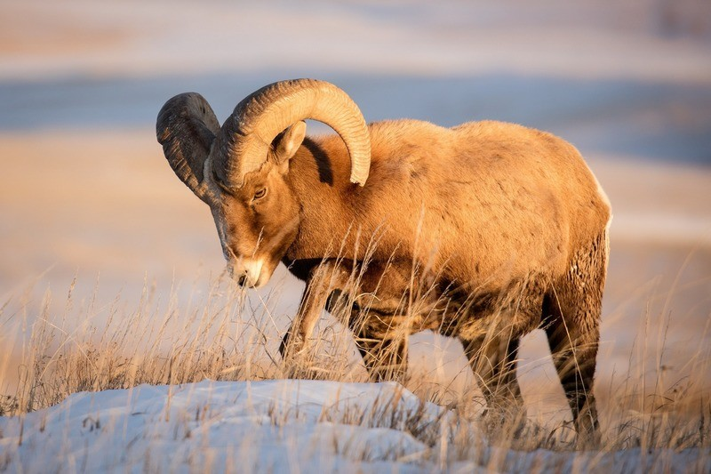
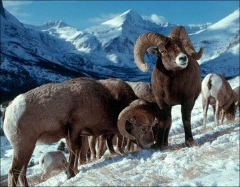
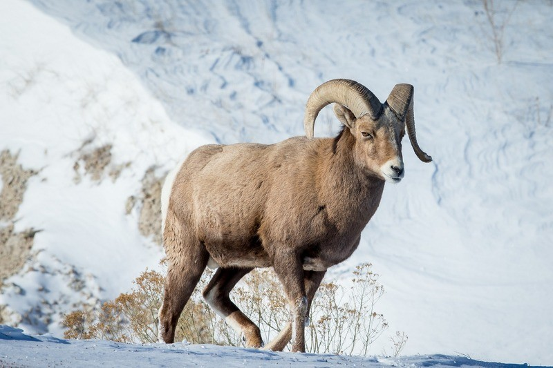

Снежный баран является ярким представителем типичных баранов с округлыми рогами и массивным телом. Официальное название – Ovis nivicola, что переводится, как обитающий в снегу. Парнокопытное проживает в Восточной Сибири. В последние годы состояние популяции вызывает подозрения. Самые древние останки взрослой особи вида насчитывают больше 100 тыс. лет, что показывает, насколько адаптивен сам вид.
Вид не находится в самом критичном состоянии, но тенденция последних лет негативная и создает предпосылки для полного исчезновения популяции в ближайшем будущем. Вид находится в списке Международного союза охраны природы. Основной статус – находится под наименьшей угрозой. Подсчитать точное количество взрослых особей не так просто. По исследованиям, которые велись с 1960 года по 1990 год, общее количество парнокопытных находилось в пределах 100 тыс. особей. В 1970 году численность уже составляла от 25 до 40 тыс. взрослых особей. Следующий подсчет был проведен в 2014 году. Тогда количество повысилось и составило около 73 тыс. взрослых особей парнокопытных. С конца 90-х годов глобальные исследования не проводились. Состоянием на 1970 год в районе плато Путорана обитало около 1,5 тыс. представителей горного вида, а спустя еще 10 лет численность популяции выросла до 3,5 тыс. Постепенно вид увеличивался в численности, спустя еще десятилетие насчитывалось больше 6 тыс. взрослых особей. Современные популяции устойчивы по численности, но занимают не так много территории России. Они нуждаются в умеренных мерах защиты, особенно ареалы, которые исторически самые подходящие для обитания популяции Ovis nivicola.
Адаптивные черты приспособленности к среде обитания снежного барана определяют скорость восстановления популяции в благоприятных условиях. Чем дальше популяция Ovis nivicola находится от вмешательства людей, тем быстрее восстанавливается численность вида.
Якутский или путоранский вид предпочитает растительный тип питания. Высшие растения, трава обеспечивают быстрый рост молодняка. В качестве привычной пищи подходит мох, лишайники и грибы. По этой причине тундра является благоприятным местом обитания.
По данным, снежные бараны употребляют свыше 300 видов растений. Рацион меняется в зависимости от сезона. С весны до осени в рационе преимущественно травы: злаки и бобовые.
С осени рацион меняется. В нем присутствуют лишайники. Среди любимых грибов маслята и сыроежки. Если в грибах большое количество личинок, а такое случается со старыми видами, то они восполняют нехватку многих белковых элементов.
Во время зимы рацион меняется. Снежный баран раскапывает снег, выискивая сухую траву. Основным рационом является лишайник. Другая пища зимой: полынь, хвощ, мох и кустарник.
 Вид Ovis nivicola является типичным представителем баранов. Животное живет в одиночку или небольшими стадами. Питание преимущественно растительное. Оно меняется по сезонам. Снежный подвид в меру адаптивный, но ряд негативных событий влияет на число взрослых особей в последние годы.